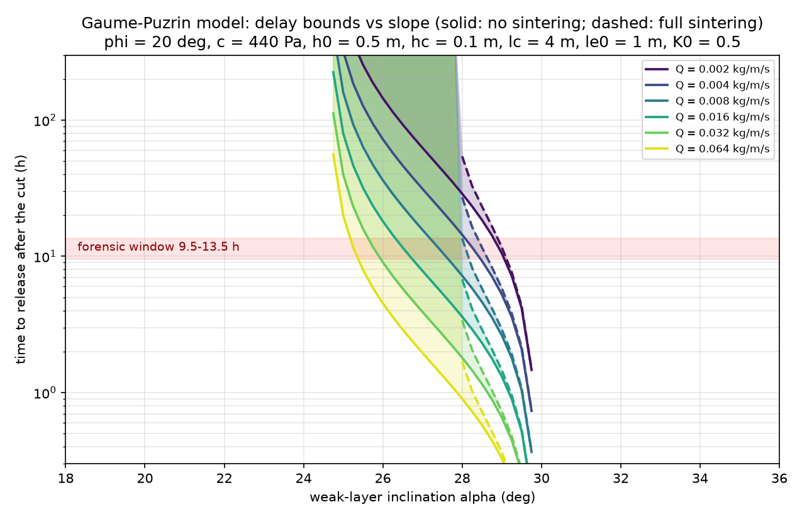
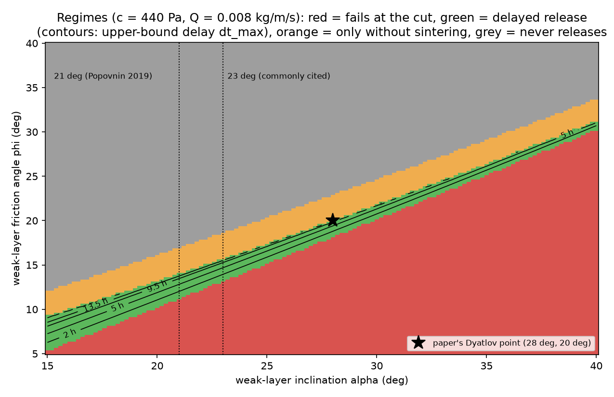

Kholat Syakhl, 1–2 February 1959
Nine members of Igor Dyatlov's ski group died on the east slope of Kholat Syakhl, above the pass that now carries his name, on the night of 1 to 2 February 1959. This report tests the explanations of their deaths against the 1959 case file.
- What happened
- Why it is a mystery, and the sides
- How this page judged it
- The finding
- What is documented
- What the bodies record
- The slope, the dark and the cold, measured
- The slab model, replicated
- Every explanation against every fact
- The most probable sequence
- What the finding does not explain
- What would overturn it
- What this adds, what it agrees with, and where it falls short
- Sources and reproducibility
What happened
In late January 1959 a party of ten left Sverdlovsk, the industrial city in the Urals now called Yekaterinburg, for a winter ski trek across the northern Urals. Nine were students or recent graduates of the Ural Polytechnic Institute, aged 20 to 24: Igor Dyatlov, a 23-year-old engineering student with several winter expeditions behind him, who led the group; Zinaida Kolmogorova, Rustem Slobodin, Yuri Doroshenko, Georgiy Krivonischenko, Aleksander Kolevatov, Lyudmila Dubinina, Nikolay Thibeaux-Brignolle and Yuri Yudin. The tenth, Semyon Zolotaryov, was a 37-year-old ski instructor who had asked to join. Yudin fell ill and turned back at the last settlement on the route; the other nine went on.
On the afternoon of 1 February, after leaving a store of food for the return journey in the valley below, they climbed onto the open east slope of Kholat Syakhl, a treeless dome of a mountain, and dug a platform for their tent into the wind-packed snow about 150 m below the crest and 1.5 km above the forest edge. The last photographs on their cameras show them digging. Sometime that night, in the dark, with the air falling toward minus 25 °C, all nine cut their way out through the tent wall with a knife and walked downhill without boots or coats.
When the telegram that was due on the group's return did not come, a search began. On 26 February the searchers found the tent half collapsed under drifted snow, with boots, coats, food and money still inside, and a line of footprints, some of them barefoot, leading down the slope. The next day they found two of the nine under a large cedar at the forest edge, beside the remains of a fire, stripped to their underwear, and two more on the slope between the cedar and the tent, lying as if they had been climbing back toward it; a third on that line was found under the snow on 5 March. All five had died of cold. The last four were not found until May, when the snow began to melt. They lay in the bed of a stream in a ravine some 75 m from the cedar, under several metres of snow, and three of them had injuries that the forensic examiner, Boris Vozrozhdenny, said needed a great force, of the kind seen when a person is thrown by a car: two crushed chests, a crushed skull, and no wound on the skin. The investigation was closed on 28 May 1959 by Lev Ivanov, the investigator from the regional prosecutor's office who ran it, with the finding that the nine had died of «стихийная сила», an elemental force, that they were unable to overcome. The resolution does not say what the force was.
Why it is a mystery, and what the sides say
Nothing in the file explains why nine experienced people would leave their only shelter at once, in the dark, at that temperature, without stopping for boots, or how three of them came by crushing injuries a kilometre and a half from the tent. The file was closed and put away. The explanations with serious advocates fall into five camps. The first holds that snow, either a small avalanche or a collapse of the snow that had piled onto the tent, came down on the sleepers and drove them out, and that the injured were crushed either then, at the tent, or later, when the snow bank they had sheltered under in the ravine gave way. This is the view of the Russian prosecutors, who reviewed the case in 2019–20 and announced a small avalanche and hypothermia without publishing their evidence, and of Johan Gaume, a snow and avalanche scientist, and Alexander Puzrin, a geotechnical engineer, whose 2021 paper gave the avalanche version its first physical model. The critics of this view include people who have examined the slope and its snow in winter, among them the aviation engineer Vladimir Borzenkov and the 1959 searchers Vladislav Karelin and Sergey Sogrin, who say the slope is too gentle, the snow too well bonded and the tent too undisturbed for any avalanche.
The second camp holds that a violent fall wind off the mountain, of the kind that killed eight skiers in Sweden in 1978, made the tent impossible to hold; this was proposed by the Swedish archaeologist Richard Holmgren in 2019. The third holds that low-frequency sound generated by wind over the summit drove the group out in terror; this is the argument of the American writer Donnie Eichar's 2013 book Dead Mountain. The fourth holds that the group was attacked, by hunters of the Mansi, the indigenous people of that part of the Urals, by criminals, or by agents of the state in an intelligence operation gone wrong, the last argued at length by the pseudonymous Russian author Alexei Rakitin in 2013. The fifth holds that a rocket test, a secret weapon or a toxic release killed them; it is fed by reports of glowing spheres over the Urals that February and by traces of radioactivity found on some of the clothing. Each explanation accounts for some facts in the file and is contradicted by others.
How this page judged it
The judgment rests on the 1959 case file itself, read in Russian: 392 numbered pages of protocols, interrogations, radio messages from the search, nine autopsy reports and the closing resolution, scanned and transcribed by the site dyatlovpass.com. From it 459 separate facts were extracted, each tagged with the number of the page, called a sheet, that it comes from, so that every claim on this page can be checked against the original. To that were added three things the file does not contain: the slope, the darkness and the cold of that night, computed from public elevation, astronomical and weather data; a line-by-line reconstruction of Gaume and Puzrin's avalanche model from the equations they published, to see what the model needs to be true; and the one forensic examination since 1959, of Zolotaryov's exhumed bones in 2018. Every explanation with a serious advocate was then scored against 28 documented facts, one fact at a time, and the finding is the reading that no documented fact contradicts. The result is a natural death with no other person involved, at about 90 per cent; snow on the tent as the reason they left, at about 65, with the Gaume–Puzrin avalanche the leading candidate at 45; and the crushing injuries in the ravine rather than at the tent, at about 75. Those percentages are judgments about the evidence, and the finding below says how far each one moves when the evidence is weighed differently. The measurement that would settle the largest open question, a snow profile up the step above the exact 1959 tent position, has never been taken.
What follows
The finding comes first, with its confidence and what would overturn it. The evidence sections come next: the facts the case file documents, each with its sheet number; what the nine autopsies and the 2018 examination record; the slope, darkness and cold as computed; and the replication of the avalanche model. Every published explanation is then scored against the 28 facts in one table, with the contradicting sheet named wherever a fact rules an explanation out. The most probable sequence of the night follows, step by step with its confidence, then the documented facts the finding does not explain, the measurements and documents that would move it, what this page adds to earlier work and where it falls short, and the sources and code.
How to read the numbers. The 90 per cent for natural causes is not shared out among the named rivals. Each of those is contradicted by at least one documented fact and is scored below. The residual is for what the file cannot check: the chemical and histological analyses referred to in the autopsy acts are not in the file, and of the nine bodies only one, Zolotaryov's, has been examined since 1959, privately, in 2018. Of the 65 per cent for snow on the tent, 45 points go to a small slab avalanche from the steps above the tent, the mechanism Gaume and Puzrin modelled, and 20 to drifted snow collapsing the roof without any release. The remaining 35 per cent of the trigger splits between a wind event alone, 15, which the standing entrance and the calm tracks argue against, and something not in the record, 20.
The most probable sequence. The sequence below carries the confidences given above. Nine experienced skiers cut their way out through the downhill wall of a tent whose uphill half had come down, left their boots and coats inside, and walked 1.5 km to the forest edge in a close group at a normal pace, in complete darkness, in a rising wind at about −12 °C and falling. Under a cedar they made a fire and cleared a line of sight up the slope. Two of the least dressed died beside it within about two hours. Three set off back for the tent and died on their own track 180 to 230 m short of it, one of them after a fall that cracked his skull. The four best dressed, now wearing the dead men's clothes, dug into a drifted stream bank 75 m from the fire and laid a floor of fir tops; the snow over the stream gave way, three were crushed under it without a mark on the skin, and the fourth froze beside them. The prosecutor Lev Ivanov closed the case on 28 May 1959 with «стихийная сила, преодолеть которую туристы были не в состоянии», an elemental force the hikers were unable to overcome. No later work has displaced that finding. This report adds, as the most probable answers rather than as established facts, what the resolution left unstated: the force was snow, at about 65 per cent, and the crushing injuries happened in the ravine rather than at the tent, at about 75 per cent.
What is documented
The criminal case file (volume 1, 392 sheets, plus a second volume of copies and correspondence) was read page by page in Russian and checked against the scans. From it 459 facts were extracted, each with its sheet number; the full tables, with the Russian wording and the places where the circulating English translation diverges from it, are published with this report. The facts below are those any explanation must account for. Sheet numbers are to volume 1.
The people cited are the ones who wrote the documents or testified. Vasily Tempalov was the prosecutor of the district town of Ivdel and wrote the first protocols at the tent and the bodies; Lev Ivanov, from the regional prosecutor's office in Sverdlovsk, took over the investigation in March and closed it. Yevgeny Maslennikov, an experienced hiker who had approved the route, led the search on the ground and kept its notebooks. Boris Slobtsov was the student who found the tent; Vladimir Lebedev, Vadim Brusnitsyn, Sergey Sogrin and Georgy Atmanaki were students and hikers in the search parties; Moisey Akselrod was a mountaineer who had hiked with Dyatlov and led one of them; Aleksey Chernyshov was an army captain who joined the search; Kirill Bardin and Yevgeny Shuleshko were sent from Moscow to assess it. Genrietta Churkina was the forensic criminalist who examined the tent. Dryahlyh, Popov and Pashin were local men questioned about the weather.
The tent
- The tent stood on the east-north-east slope of Kholat Syakhl about 150 m below the crest of the spur, on a platform levelled out of the snow with the skis laid under the floor, pitched "very firmly, by all the rules, with the strong wind in mind". The entrance faced south, the ridge was held on ski poles, and the guy lines ran to poles and a spare pair of skis.Sheet 2 (Tempalov's discovery protocol, 28 Feb); 70 (Maslennikov); 89 (Chernyshov); 314 (Lebedev); 366 (Brusnitsyn)
- When found on 26 February the entrance end stood on its pole with its guy lines intact; the northern guy lines were torn away, the far ridge had sunk, and that half lay under snow. Slobtsov, who found it, measured the snow on the tent at 15 to 20 cm, "blown on, hard". Maslennikov: "there was not much snow, only what the February blizzards had drifted in".Sheets 298 (Slobtsov); 70 (Maslennikov); 310 (Tempalov); 366 (Brusnitsyn: no pole was ever under the north ridge)
- Ski poles and a spare pair of skis still stood upright in the snow around the tent; an ice axe was stuck by the entrance; a Chinese flashlight lay on the canvas of the tent with 5 to 10 cm of snow under it and none on top, and it lit when Slobtsov switched it on.Sheets 298–299 (Slobtsov); 70 (Maslennikov); 214 (Atmanaki)
- The forensic criminalist Churkina found three knife cuts in the downhill (right) slope of the canvas, 32, about 89 and about 42 cm long, and from the direction of the thread damage concluded they were made from inside. Everything else was tearing.Sheets 303–304 (Act 199, 16 Apr 1959)
- Inside were nine backpacks, eight pairs of boots and three and a half pairs of felt boots, all the warm outer clothing, the stove packed in its case and unlit, food for two or three days, cut slices of loin with a bitten rind, and a flask of alcohol. Nothing of value was missing. The group appeared to be "in the last stage of changing clothes and preparing for the night".Sheets 2; 70; 160 (radiogram 28 Feb); 311 (Tempalov); 314–315 (Lebedev); 337 (Sogrin: the stove was not used); 367 (Brusnitsyn); 385 (Ivanov)
- Small items lay a short way downwind of the tent: slippers, socks, ski caps, Dyatlov's fur jacket and a storm jacket; a roll of film about 15 m below; a ski pole found inside cut into several pieces with a clean knife cut; a urine trace near the tent.Sheets 70; 215 (Atmanaki); 299 (Slobtsov); 311 (Tempalov); 315 (Lebedev); 367 (Brusnitsyn)
- No witness who saw the tent, the slope or the snow reported any sign of an avalanche, and one said so in terms: Sogrin, at the site on 4 March, "here there was neither an avalanche nor a snow collapse"; Akselrod, "the slope as such played no role in their death". The only "buried by snow" phrase in the file is a radiogram sent on the first evening before the tent was inspected. Ivanov's closing resolution does not contain the word.Sheets 335 and 324 (Sogrin, Akselrod, 24 Apr); 149 (radiogram, 27 Feb 17:45); 384–387
The footprints
- Tracks began 15 to 40 m below the tent and ran down toward the valley in parallel chains "close to one another, as if the people walked holding on to each other"; two groups of tracks (six or seven pairs and two pairs about 20 m to the left) merged after 30 to 40 m. Eight pairs were counted with certainty; the ninth was disputed. Prosecutor Tempalov: "the tracks showed me that the people walked at a normal pace down the mountain."Sheets 90 (Chernyshov); 215 (Atmanaki); 297 (Maslennikov); 299 (Slobtsov); 312 (Tempalov)
- The prints stood up as raised columns because compressed snow under a foot resists the wind; toes were imprinted (bare feet or one cotton sock); one track was made by a boot. They were traceable for 500 m to a kilometre and were lost where the snow deepened near the forest. No other human or animal tracks were found, and there was no sign of a struggle.Sheets 90–91 (Chernyshov); 160 (radiogram 28 Feb); 386 (Ivanov)
- A second flashlight, switched on with its battery exhausted, lay on the slope below the tent (about 100 m by Atmanaki, 450 m by the radiogram of 7 March).Sheets 191; 220
The cedar and the slope
- Doroshenko and Krivonischenko lay one metre from a fire under a cedar at the forest edge, 1.5 km from the tent, stripped to shirts and underwear. The fire had burned one and a half to three hours; cedar branches 8 cm thick had burned through. Around the fire lay socks, a checked shirt with 8 roubles in it, a handkerchief and cut-off pieces of clothing.Sheets 3–4 (scene protocol, 27 Feb); 68 (Maslennikov); 216 (Atmanaki); 333 (Sogrin); 366 (Brusnitsyn)
- The cedar's dry lower branches were broken off as high as a person can reach and, on the side facing the tent, up to 4 or 5 m, so that "the people seem to have made something like a window" toward the slope they had come from. Twenty or so young firs had been cut with a knife within 20 m, most of them left unused.Sheets 68–69; 91; 216–217; 366
- Dyatlov, Slobodin and Kolmogorova lay on a straight line from the fire toward the tent at roughly 300, 480 and 630 m from the fire, heads toward the tent, the two farthest face down "in a pose of crawling toward the tent". Slobodin had 7 to 8 cm of half-ice under his knees and chest, showing he had lived some time in that position; his cap was still on his head.Sheets 4–5; 69–72 (Maslennikov); 216 (Atmanaki); 322 (Akselrod); 386
- Kolmogorova's body was under about 10 cm of snow, Slobodin's under 12 to 35 cm; Dyatlov's was visible.Sheets 34–35 (Bardin and Shuleshko); 71; 322
The ravine
- On 4 to 6 May the last four were found in the bed of a stream 50 to 75 m from the cedar, in the water, under 2 to 2.5 m of snow by the protocol and 4 to 4.5 m by Ivanov, three lying with heads downstream and Dubinina against the current. Six metres upstream a flooring of fourteen fir tops and a birch top had been laid on the snow with clothing on it. Krivonischenko's knife, which had cut the firs at the fire, lay near the bodies.Sheets 341–343 (protocol, 6 May); 386
- Thibeaux-Brignolle and Zolotaryov were well dressed; Dubinina's fur jacket and cap were on Zolotaryov; her bare foot was wrapped in a piece of burned wool cardigan; clothing cut from the two dead at the cedar was on and around the four. Thibeaux wore two watches, stopped at 8:14 and 8:39; Slobodin's at 8:45; Dyatlov's at 5:31.Sheets 341–343; 355 (Dubinina act); 386
Timeline and weather in the file
- The group cached food for the return journey at the labaz, a store they built in the valley, on the morning of 1 February and set off at 15:00; the last frames on the cameras show the platform being dug, which Ivanov dated from the exposure to "about 17:00"; a joke wall newspaper the group wrote, "Evening Otorten", named after the mountain they were heading for, is dated 1 February; no record or photograph exists after that.Sheets 31; 33 (Bardin and Shuleshko); 73; 385
- The file contains no weather-station reading for 1 to 2 February. Ivanov wrote "a low temperature of the order of 25 to 30 degrees" and "strong wind usual in this area"; the search report says the pass usually blows at 15 to 20 m/s and up to 36; three local witnesses describe exceptional winds in the first days of February.Sheets 39; 41, 48, 50 (Dryahlyh, Popov, Pashin); 385
- Every first-hand sighting of a light phenomenon in the file is dated 17 February or 31 March 1959. Every statement about a light on 1 February is hearsay or an unanswered query.Sheets 167–168 (radiograms); 211–212, 227, 260, 264–267, 291, 344; 273–274, 270–272, 275–281 (relatives, hearsay)
- The closing resolution of 28 May 1959: "considering the absence on all the bodies of external bodily injuries and of signs of a struggle, the presence of all the group's valuables, and the forensic conclusions … the cause of the hikers' death was an elemental force which the hikers were not in a position to overcome."Sheet 387
What the bodies record
Nine autopsies were performed by the Sverdlovsk regional forensic expert Boris Vozrozhdenny: five on 4 and 8 March 1959 (with a second expert, Ivan Laptev, co-signing the four of 4 March) and four on 9 May 1959 in Ivdel. The table gives what each act records, read from the Russian transcription and checked against the scans. Sheet numbers (л.д.) refer to volume 1 of the case file.
| Victim | Found | Cause of death as written | Injuries recorded as inflicted in life | Clothing at autopsy | Sheets |
|---|---|---|---|---|---|
| Yuri Doroshenko, 21 | 27 Feb, under the cedar by the fire, 1,500 m from the tent | Low temperature (freezing) | Scalp hair singed on the right; small abrasions and a skin wound on the arms with bleeding; foamy grey fluid at the mouth | Shirt and sleeveless vest; long johns over two pairs of underpants; socks only | 104–111 |
| Georgiy Krivonischenko, 23 | 27 Feb, beside Doroshenko | Low temperature; second- and third-degree burns "at the campfire" | 31 × 10 cm burn of the left shin with charring; degloved skin on the back of the left hand; nose-tip defect; a flap of his own fingertip skin found behind his teeth; bleeding into the right temporal muscle and occipital scalp | Shirt and undershirt; long johns with the left leg burnt off; one charred sock | 112–119 |
| Igor Dyatlov, 23 | 27 Feb, 300 m from the fire toward the tent, on his back, one arm round a birch | Low temperature (freezing) | Abrasions on the face, knuckles and both ankles with bleeding; superficial cuts on the left fingers; skull and skeleton intact | Four layers on the torso, three on the legs, socks, no hat | 120–126 |
| Zinaida Kolmogorova, 22 | 27 Feb, 630 m from the fire, face down, "in a pose of crawling toward the tent" | Low temperature (freezing) | Many facial abrasions; knuckle abrasions; a scalped wound on the right hand; a 29 × 6 cm strip abrasion on the right flank | Five layers on the torso (both sweaters inside out), five on the legs, two pairs of socks, two hats, no boots | 127–134 |
| Rustem Slobodin, 23 | 5 Mar, 480 m from the fire, face down, between Dyatlov and Kolmogorova | Low temperature (freezing) | Linear fracture of the left frontal bone up to 6 cm, gaping 0.1 cm; bleeding into the scalp and both temporal muscles; 75 cm³ of bloody fluid under the dura; facial and knuckle abrasions with bleeding. The examiner: the fracture "undoubtedly caused short-term stunning" and "favoured faster freezing" | Four layers on the torso, four on the legs, one felt boot on the right foot over four socks | 95–103 |
| Aleksander Kolevatov, 24 | 4 May, in the ravine stream bed 75 m from the fire, under 4 to 4.5 m of snow | Low temperature | Bleeding at the inner left knee; a wound behind the right ear to the mastoid; neck deformed at the thyroid cartilage (the act attributes the head and neck changes to post-mortem decay); 500 cm³ of bloody fluid in the chest | Five layers on the torso, four on the legs, socks and a bandaged ankle, no boots | 345–348 |
| Semyon Zolotaryov, 37 | 4 May, ravine | Multiple fractures of the right ribs with bleeding into the pleural cavity, in the presence of low temperature | Ribs II–VI on the right broken along the parasternal and mid-axillary lines with bleeding into the intercostal muscles; about 1 litre of blood in the chest; eyeballs absent (post-mortem) | Five layers on the torso, three on the legs, quilted felt boots, two hats; a compass on the arm and a camera round the neck | 349–351 |
| Nikolay Thibeaux-Brignolle, 23 | 4 May, ravine | Closed comminuted depressed fracture of the vault and base of the skull with bleeding under the meninges and into the brain, in the presence of low temperature | Depressed fracture of the right temporo-parietal region over 9 × 7 cm with a 3 × 3.5 × 2 cm piece pressed onto the dura; fissures totalling 17 cm across the base into the left middle fossa; a 10 × 12 cm bruise on the right upper arm | Three layers on the torso, three on the legs, nearly new felt boots, two hats; two watches on one wrist | 352–354 |
| Lyudmila Dubinina, 20 | 4 May, ravine | Extensive bleeding into the right ventricle of the heart, multiple bilateral rib fractures, abundant internal bleeding into the chest | Ribs II–V on the right along the midclavicular and anterior-axillary lines and II–VII on the left along the midclavicular line, with bleeding into the intercostal muscles; a 4 × 4 cm bruise soaking the right ventricle; 1.5 litres of blood in the chest; a bruise on the left thigh. Tongue, floor of the mouth and eyes absent (no bleeding at the hyoid on histology) | Five layers on the torso; torn, burned trousers; one foot wrapped in a burned piece of a wool cardigan; no boots | 355–357 |
Three points in this record bear most on the finding.
The March five froze. All five show the classic markers the examiner used for death by cold: Vishnevsky spots, small haemorrhages in the stomach lining that are a standard marker of death by cold; overfilled bladders, third- and fourth-degree frostbite of fingers and toes. None of the ravine four shows any of them; their hands and feet show only the "bath skin" of three months in water.
The ravine injuries were inflicted in life and required great force without breaking the skin. On 28 May 1959 the investigator questioned the examiner about them. His answers are given below in Russian with a new translation, because the English version in circulation adds a word, "bomb", that he did not use.
Radioactive contamination was found at low levels on three garments only. Only the clothing and tissues of the ravine four were tested (sheets 370–377, by Levashov, the chief radiologist of the city sanitary service, 18–29 May). The activity was beta only, with no alpha or gamma, and it washed off: 30 to 60 per cent came out in three hours of running water. Tissues were at natural potassium-40 levels, indistinguishable from a control body from a Sverdlovsk car crash. On clothing, the expert's own threshold, the sanitary norm for radiation workers of 5,000 disintegrations per minute per 150 cm² before washing, was exceeded by three pieces:
| Item (owner as numbered by the expert) | Before washing | After 3 h washing |
|---|---|---|
| Brown sweater, №4 Dubinina | 9,900 | 5,200 |
| Sweater waistband, №1 Kolevatov | 5,600 | 2,700 |
| Lower part of trousers, №1 Kolevatov | 5,000 | 2,600 |
| Seven other items (Zolotaryov, Thibeaux, Dubinina) | 600–2,000 | 230–1,400 |
| Soil from under Kolevatov (control) | 96 counts vs 90 background | — |
The expert's answer to whether ordinary clothing should carry any such contamination was «Не должно быть совершенно» ("there should be none at all"), and he allowed that after fifteen days in running stream water the original levels "could have been many times greater". He could not identify the nuclide: the laboratory had no radiochemistry or spectrometry. The nine sheets were removed from the file on 10 July 1959 as "not relevant" and returned to the archive only decades later.
Examined since 1959: Zolotaryov, April 2018
One of the nine has been examined since 1959. On 12 April 2018, at the request of Zolotaryov's relatives and with the city's permission, the newspaper Komsomolskaya Pravda (KP) opened the grave under the obelisk inscribed «Семён Золотарёв» at the Ivanovskoye cemetery in Yekaterinburg, outside any criminal procedure; the Dyatlov Memorial Foundation, the Yekaterinburg association of relatives and friends that keeps the group's archive, called it clandestine, and the 2019–20 prosecutors' check neither used it nor ordered its own, its experts holding exhumation "useless" after so long. Sergey Nikitin of the Moscow bureau of forensic medicine examined the skeleton, with the physician Galina Sazonova assisting. The coffin and clothing had rotted away under a fill of stones; the bones and skull were intact. No written expert report has been published. What follows is Nikitin's account on KP's radio programme of 26 April 2018 and his interview with the newspaper Moskovsky Komsomolets of 28 February 2019.
What the bones settled. The 1959 act is confirmed on the ribs, II to VI on the right along the parasternal and axillary lines, and shown to be incomplete: three fractures of the right scapula (the shoulder blade), inflicted in life, which Nikitin, Sazonova and KP's consultant, the forensic expert Eduard Tumanov, agree are real (the left scapula and far more fragile bones survived the grave intact), were missed because the back was never opened in 1959, so the acts of Dubinina and Thibeaux-Brignolle may under-record as well. The fracture types, the ribs bent inward at the sides and outward at the breastbone, fix the geometry: front-to-back compression of a man lying on his back by a surface wider than his ribcage, slightly right to left. Nikitin and Tumanov both exclude a blast wave, Tumanov also a fall onto a flat hard surface, and both read the load as broad and blunt, "comparable to the surface of the chest".
What they did not settle. Nikitin thought the surface under the body "relatively hard, unlikely snow"; Tumanov answered that the intact spinous processes, the bony points along the spine, argue against a hard surface. The scapula is read as one impact while supine (Nikitin), at least two blows with a narrower object (Tumanov) or two successive blows (Sazonova, "but I am not an expert"); nobody has measured the fractures or converted the pattern into a mass or a fall height. The bones do not show where or when the injuries were sustained. Nikitin said so in 2018, and in 2019 gave Moskovsky Komsomolets his own reconstruction, the four falling into the stream one on another, Dubinina first, Zolotaryov onto her, Kolevatov onto him, Thibeaux striking his head on a stone, and called the version in which the injuries were inflicted in the tent by a slab «неправдоподобной», implausible, because Dubinina and Thibeaux could not have come down the slope. That is an expert's opinion consistent with Vozrozhdenny's mobility statements; it is not an independent measurement. Identity: a photographic superimposition matched 13 of about 24 features; a first mitochondrial test in a private laboratory excluded maternal kinship with the niece; a second, at the Russian Centre of Forensic Medicine under the geneticist Pavel Ivanov in July 2018, gave a 99.66 to 99.84 per cent probability of kinship while noting that mitochondrial DNA cannot separate Semyon from his brother Nikolai. No nuclear test has been reported to September 2026, and no other body has been exhumed.
Bearing on the finding. A broad, sudden, front-to-back load on a supine man is what a snow-loaded tent roof, a collapsing den roof or a fall onto a body in the stream would each produce, so the 2018 examination does not by itself decide between the tent and the ravine. It removes the blast wave, confirms the 1959 act where it can be checked, adds an injury the act missed, and supplies one more expert who places the injuries in the ravine on the same mobility grounds as the 1959 examiner. It does not change the 75 per cent for the ravine, and it is a reason the missing chemistry and the unexhumed bodies of Dubinina and Thibeaux-Brignolle head the list of what would move this finding.
The slope, the dark and the cold, measured
Three quantities in this case have been disputed since 1959 and can be computed from public data: the steepness of the slope at the tent, the darkness of the night, and the temperature. The code is published with this report.
Slope
Two measurements exist, at two scales, and they answer different questions. The public Copernicus GLO-30 elevation model (30 m grid, radar-derived, snow-free) gives the average ground slope at the best-supported tent position, the cairn-marked site three independent Russian researchers agree on (61.7585 N, 59.4294 E, 899 m), as 15 to 16 degrees over windows of 60 to 300 m, with about one degree of random error; the other candidate positions (the point the prosecutors fixed in 2019, 115 m to the north; Borzenkov's GPS reading; the memorial sculpture) give 16 to 19.5 degrees. Directly upslope the ground rises at 17 degrees for the first 100 m and 14 for the next 100 m, and 200 to 300 m up it flattens to a 6-degree shoulder. A 30 m grid smooths away anything shorter than about two grid cells, so a step 4 to 6 m high and 10 to 20 m long, the feature the slab model rests on, is invisible to it whether or not it exists.
The measurement at the scale of the steps is Puzrin and Gaume's own. In September 2021 a drone photogrammetry survey of the slope around the possible tent locations produced a 9 cm terrain model. Their 2022 Comment reports that the average slope along their section is "around 20°" and that "the steps have inclinations exceeding 28 degrees, and many slopes are even steeper than 30 degrees", adding that "these slopes are not just local, they are continuous: no matter where you pitch your tent you are likely to be below one of them". The survey was made on bare ground. In winter, Galina Pigoltsina, the climatologist who modelled the site's weather for the prosecutors in 2019, reports wind transport of 600 to 1,000 m³ per metre of slope, enough, in Puzrin and Gaume's words, to "completely cover local topographic features such as the steps"; the model's mechanism depends on that: a weak layer that formed on the stepped early-winter surface at about 28 degrees and was then buried under a slab whose surface lay at the gentler average angle.


The 1959 witnesses bracket the average. Sergey Sogrin, who climbed to the tent site on 4 March with Moisey Akselrod's search party, testified that "the slope on which the tent stood is not dangerous, the steepness is 15 to 18 degrees" (sheet 334). Vadim Brusnitsyn, a student searcher, gave "approximately 20 to 25 degrees" and "reaches 20 degrees at the tent" (sheets 366, 369). Prosecutor Tempalov's tent-site protocol says 30 degrees, in a sentence that also puts the summit at 300 m when it is 760 m away (sheet 2). The 2019 prosecutors' glaciologist, Viktor Popovnin, measured 21 degrees at the point the geodesists gave him and probed «каменная гряда» under the snow where the tent stood, a stone ridge. The 2021 paper's "about 23 degrees" was the average snow slope estimated from the 1959 photographs, and its 28-degree weak layer an estimate of the step behind the tent; the 2022 survey replaced the estimate with a measurement of the steps and lowered the average to about 20.
What the two measurements settle is limited. On the average slope, the 30 m model agrees with Sogrin, with Borzenkov's 16 to 17 degrees and, within the smoothing of a radar grid and the uncertainty of the tent position, with the drone survey's 20; it is below the 23 degrees of the 2021 paper, which the authors themselves replaced with about 20 degrees in 2022. On the steps, the 30 m model says nothing, and the 9 cm model says they are there, steeper than 28 degrees and continuous across the slope. The coarse average is not evidence against the model's 28-degree layer. What no survey has measured is the snow: whether in the winter of 1958–59 a weak layer lay on such a step above the tent, and which step the tent stood under.
Darkness
| 1 to 2 February 1959, local time (UTC+5) | Event |
|---|---|
| 14:40 | Tent site loses direct sun behind Kholat Syakhl (terrain horizon 13 to 17 degrees to the south-west) |
| 17:03 | Sunset on a flat horizon |
| 17:54 / 18:49 / 19:40 | End of civil, nautical and astronomical twilight |
| 19:40 to 04:15 | Full night with no moon at all; Burmantovo reports overcast until midnight, clear by 03:00 |
| 04:15 | Waning crescent (33 per cent) rises in the south-east, 7 degrees high by 06:00 |
| 08:35 / 09:26 | Civil dawn and sunrise on 2 February |
The moon was five days from new (new moon 8 February, 00:22 local). Anyone on that slope between about seven in the evening and four in the morning was in complete darkness under cloud, then starlight on snow. Ivanov's estimate that the tent was pitched "at about 17:00" was inferred from the exposure of the last frames on the cameras; since the site was already in mountain shadow from 14:40, those frames could be earlier.
Cold
The nearest weather-station records, from Ivdel, Nyaksimvol and Pechora, 100 to 200 km away, survive in the daily archive of NOAA, the US weather agency. The week before was mild for the season, with daily maxima of minus 4 to minus 7 at Ivdel and Nyaksimvol. On the night of 1 to 2 February a cold front passed: the Ivdel minimum fell from minus 11.2 to minus 20.3, Nyaksimvol from minus 13.9 to minus 30.8, Pechora from minus 23.1 to minus 35.1. A loose sheet in Maslennikov's search notebook copies the readings for that night from Burmantovo, the nearest weather post, in the Lozva valley below the mountains: minus 13 at 21:00, a warm blip to minus 5 at 23:00 as the wind veered west, minus 15 at midnight with a north-west wind, minus 21 under a clear sky at 03:00. Station winds in the lowland were light; the case file's search-organisation report says the pass "usually" has 15 to 20 m/s and up to 36 (sheet 39).
| Estimate at the tent (899 m) | Evening, 18:00 to 22:00 | Small hours, 01:00 to 05:00 |
|---|---|---|
| Air temperature, station-based (this study) | −10 to −15 °C | −20 to −26 °C |
| Air temperature, Pigoltsina 2019 microclimate model for the prosecutors | −16 to −19 °C | −26 to −31 °C |
| Wind (Pigoltsina, tent in a north-west lee) | 9 to 10 m/s | 10 to 12 m/s |
| Wind chill at 8 to 15 m/s (the standard 2001 wind-chill formula) | −22 to −29 | −34 to −45 |
Exposed skin freezes in under 30 minutes below a wind chill of about minus 28 and under 10 minutes below about minus 40. These people were in socks, shirts and one or two sweaters. The cold alone is enough to kill all nine within the night. It does not explain why they left the tent.
Distances
Tent to cedar: 1,551 m horizontal, 256 m of descent, mean gradient 9.4 degrees, bearing 62 degrees. Wind crust for the first 850 m (where the searchers found footprints standing proud as columns), then loose snow one to two metres deep to the forest edge. Walking time without boots in the dark: 35 to 85 minutes. The three bodies on the slope lie within 31 m of the straight line from the fire to the tent, at 323, 503 and 654 m from the fire; Kolmogorova, the farthest, had climbed 72 of the 256 m and still had 184 m of ascent and 900 m of walking left.
The slab-avalanche model, replicated and stress-tested
Johan Gaume, then at the Swiss Federal Institute of Technology in Lausanne (EPFL), and Alexander Puzrin, of its sister institute in Zurich (ETH), published their model in January 2021. It answers four objections to the prosecutors' 2020 avalanche verdict: no avalanche signs when the tent was found, a slope too gentle, a release hours after the platform was cut rather than during the digging, and injuries unusual for avalanche victims. Their answer is a small wind slab, a plate of wind-packed snow roughly 5 m by 5 to 9 m and 0.3 to 0.5 m thick, that released from a buried weak layer, a fragile layer of snow crystals on which a slab can slide, inclined at 28 degrees on a local step above the tent, after wind-blown snow accumulating in the lee of the cut had loaded it for 7 to 13.5 hours; it slid 1 to 2 m onto the uphill half of the tent and crushed the sleepers against the ski-reinforced floor.
The equations in the paper's Methods were reimplemented for this page (the authors' code on Zenodo could not be downloaded), and they reproduce every published number to the quoted precision: wind-snow height 0.24 and 0.44 m, delay 7.2 and 13.5 hours, tension crack 4.95 m, slab width 8.8 m. The model is internally sound. The table below lists its inputs and what the record says about each.
| Input | Value in the paper | Where it comes from | What the record says |
|---|---|---|---|
| Weak-layer inclination | 28° | Assumed: "a locally steeper slope above the tent had an inclination of at least 28 degrees" (2022 Comment) | Ground steps 4–6 m high measured at over 28°, many over 30°, "continuous" above the candidate tent positions on the authors' 9 cm drone model (September 2021); average slope "around 20°" (2022) against 23° ± 2° (2021); the public 30 m model gives a 15–16° average and cannot see the steps; 1959 witnesses 15–18° (Sogrin) to 30° (the protocol); 21° at one point in 2019. Whether a weak layer lay on the step in 1959 is unmeasured |
| Slab thickness at the cut | 0.5 m | Tent-photo geometry | Consistent with the 1959 photographs of the platform |
| Weak-layer friction and cohesion | 20°, 440 Pa | Friction from published distributions; cohesion fixed so that the cut alone does not fail | No weak layer has been found at the site in any winter pit (Borzenkov, 2010, 2014, 2015, 2019); the 1959 searchers found none (Sogrin) |
| Wind snow deposition rate Q | 0.008 kg/m/s | Back-calculated from the forensic delay (peer-review file) | Measured drift fluxes at 9–12 m/s span two orders of magnitude; the paper's own SI cites station winds of 2–4 m/s |
| Forensic delay | 9.5–13.5 h | Sunset 17:02, cut "not later than 16:00", watches taken as 1 h after death, death 6–8 h after the last meal (SI Note 1) | The tent site was in shadow from 14:40; the watches are not death times; the "6–8 hours" is written identically for five bodies with stomach contents from traces to 150 cm³ |
| Impact | ≤ 2 m/s, blocks ≤ 0.5 m³ | A material-point simulation, a numerical method that follows snow as it flows and breaks; the chest calibrated to "10 kg at 7 m/s → 49 % deflection" from the 1974 crash tests on cadavers by Charles Kroell and colleagues, the car industry's standard chest-injury data | Kroell's fixed-back tests used 19.5–23.1 kg pendulums; the calibration point may make the modelled chest too soft |
What the replication shows
With the paper's own snow parameters, the delayed-release behaviour exists only in a band two to three degrees wide around the assumed angle. The release window is 24.7 to 29.7 degrees; the 9.5-to-13.5-hour window is hit at 26 to 28.5 degrees. At 22 or 23 degrees the slab never releases, however much snow the wind adds. At 25 degrees it releases only if the wind snow never bonds, and then after more than 150 hours. At 30 degrees it fails while the platform is being dug. The regime is sensitive to small changes in the parameters: cohesion of 300 Pa gives failure at the cut, 440 Pa the published delay, 450 Pa no release; 5 cm of slab thickness, one degree of slope or friction, or 30 kg/m³ of density flips the regime. Once in the delayed regime, the time to release is proportional to the deposition rate, which nothing measured constrains. The journal's reviewer made the same point: Dieter Issler, an avalanche scientist who reviewed the paper for the journal, wrote that the agreement between the computed and forensic delays was "coincidental", and the authors' revision "no longer claims that they have reproduced the delay" but back-calculates the deposition rate from it.


Impact. A simple spring-and-damper model of the chest, calibrated as in the paper, gives 20 to 70 per cent chest compression for 50 to 200 kg blocks at 2 m/s on a person lying against a firm floor; the paper's 28 to 34 per cent falls inside that. Contact pressures are 25 to 50 kPa (kilopascals; the atmosphere presses at about 100), two to three orders of magnitude below what breaks skin. So "multiple rib fractures with no external wound" is what a broad, heavy, slow load does, and it is equally what a collapsing snow roof, or three to four metres of static snow, does to someone lying on a stream bed. The injury physics cannot tell the tent from the ravine.
The skull. The one injury the chest physics does not cover is Thibeaux-Brignolle's: a depressed fracture over 9 by 7 cm of the right temporo-parietal bone, with a piece 3 by 3.5 cm driven onto the dura (л.д. 353). Fractures of that region in cadaver tests need 2.5 to 10 kN (kilonewtons; one kilonewton is roughly the weight of 100 kg), mean 5.2, delivered through a flat 5 by 10 cm plate or a 2.5 cm disc (the 1991 tests of D. L. Allsop and colleagues; a 2004 review by N. Yoganandan and F. A. Pintar gives 5.6 to 9.9). A block of snow can transmit no more force than its crushing pressure times the area it bears on. Over the whole 63 cm² of the depression the 2.5 kN floor needs 400 kPa and the 5.2 kN mean 800; over the 50 cm² test plate, 500 kPa; over the 10.5 cm² bone piece alone, 2.4 MPa, a pressure reached by ice or rock and by no snow. Where the crushing pressure of the snow on that slope lies is the open question. Gaume and Puzrin's own impact simulation gives the wind slab a yield pressure of 100 kPa and the older snow 30 kPa, hardening as it compacts (their Methods, Eq. 48); at 100 kPa a slab face bearing on the entire depression delivers 0.6 kN, a factor of four short. Malcolm Mellor's 1975 review of snow mechanics, compiling tests of dry, coherent snow under rapid laboratory loading reads, from his Fig. 17, as about 300 to 700 kPa at 0.40 g/cm³ and 500 to 950 at 0.46, the densities measured at the site; the same figure puts tensile strength at 0.40 near 190 kPa, twenty to thirty times the 6 to 10 kPa the paper assigns its slab, so a young natural slab sits at or below the bottom of that band. Pairing the hardest of those figures, 300 kPa, with a 100 cm² contact larger than the fracture gives 3 kN, which overlaps the threshold: the numbers do not exclude snow. What the arithmetic supports is narrower: a soft or medium slab cannot have made this fracture by itself; snow could have made it only as a hard, well-sintered slab or crust bearing on most of the depression with the head backed by something firm, or through a hard object between the snow and the temple. The examiner's own description, a deep multi-fragment depression with one piece driven in, reads as a concentrated load, which is why Evgeny Buyanov, the engineer whose 2011 book puts the injuries at the tent, puts a camera under his head, why the paper's supplement adopts that reading ("high concentrated force"), and why this finding names a stone or an ice edge in the stream bed. That is an interpretation rather than a measurement: the piece of temporal bone taken at autopsy for study (л.д. 354) was never reported on, and nobody has examined the margins since. The constraint holds equally in the tent and in the ravine, and it does not change any of the percentages. Arithmetic: code/physics/skull_constraint.py.
The follow-up evidence. Puzrin and Gaume returned in March and September 2021 and January 2022, and reported in a 2022 Comment: a 9 cm drone model showing "an average slope of about 20 degrees" with metre-scale steps over 30; two slab avalanches on an eastern slope less than 3 km from the tent on 29 January 2022, the smaller one "practically invisible after less than an hour" under wind-transported snow; independent expert work for the prosecutors (Popovnin's 2019 snow measurements, Pigoltsina's computed 9 to 12 m/s wind and more than 150 cm of snow above the tent) consistent with their assumptions. A further slab was photographed by Dmitriy Borisov, a hiker who visits the pass, about 700 m from the tent on Kholat Syakhl itself on 7 January 2023. These observations settle three things: that steps steeper than 28 degrees exist above every candidate tent position, so the model's terrain requirement is met at the scale of the steps; that slab avalanches occur in the area; and that small ones vanish within an hour. They do not show the snow requirement, a weak layer lying on such a step in February 1959, and the avalanches observed were on a different slope under different conditions, as the authors say: the slab there "was softer, the slope was steeper, it was not undercut from below and the trigger was probably different".
The counter-case, and what survives of it
The strongest opponents are people who have examined the slope and its snow in winter. Vladimir Borzenkov, an aviation engineer with six winter expeditions between 2012 and 2019, measured the snow surface at 16 to 17 degrees along its whole length with about 20 degrees in the last 5 m under the shoulder, snow density 458 kg/m³, depth 0.8 m at the tent rising to 2.2 to 2.5 m twenty metres upslope, hard crust throughout, and in four winters of pits found no weak layer and no depth hoar; a shear test in March 2019 gave a strength more than ten times the driving stress. Vladislav Karelin, a 1959 searcher, showed that the prosecutors' trace-evidence expert in 2020 reversed cause and effect on the tent poles, and that the entrance pole stood with its guy lines intact while the poles for the rear guys were still in place. Sergey Sogrin, also a searcher, testified in 1959 that the slope was 15 to 18 degrees and later that he looked specifically for depth hoar under the crust and found none.
Scored against the replication: Borzenkov's density, depth profile and wind climatology survive as measurements, and the last two argue against the model rather than for a bigger avalanche, since denser snow and stronger wind shorten the modelled delay to minutes. His 16 to 17 degrees is the winter snow surface, which is the smoothed average and does not speak to the ground steps beneath it. His pits show that in four recent winters the snowpack was nowhere near failure; they cannot show what it was in 1959. His claim that a slab would have left debris does not hold: a 12 to 20 m³ slab stopping on the flat platform leaves 0.3 to 0.5 m that 25 days of wind reworks, and the 2022 observation of a trace erased within an hour is direct. Karelin's point about the poles is correct as mechanics but does not discriminate: a half-collapsed tent with the far guys torn is what either a small slab or a 20 to 25 m/s gust leaves. The objection that the footprints start 15 to 40 m below the tent does not discriminate either; hard crust records no prints at the tent, with or without a slab.
The decisive question is therefore not the slope, which the drone survey has answered in the model's favour, but the snow: whether a buried weak layer lay on one of those steps for about 5 to 7 m above the cut in early February 1959. The winter observations at the site point in different directions. Popovnin, measuring for the prosecutors in March 2019, found snow properties consistent with the model's assumptions and a stone ridge under the tent site, and still told Komsomolskaya Pravda that the version needed «чёткие доказательства. Не аргументы, а доказательства», clear proofs, not arguments, and had none. Borzenkov, from pits cut to the ground in 2010, 2014, 2015 and 2019, the first by an expedition he briefed but did not join, found strong bonding between every layer, no depth hoar, stones protruding 10 to 40 cm from the ground under the pack, and in a March 2019 shear test on the visually weakest deep layer a strength more than ten times the driving stress; Sogrin recalls cutting sections in 1959 and finding none. None of these was a pit line up the step above the fixed 1959 position, so none settles it. On the steps themselves the two sides' figures are close: Borzenkov concedes steps of 28 to 30 degrees but puts them at no more than 5 to 6 m long, while the paper's 4-to-6 m height implies 8 to 12 m of slope length; the modelled slab is 5 m long and its stressed zone 7 m, so on his figures the terrain is marginal and on theirs ample. The paper's mechanism is possible on this slope. Whether it occurred at the tent on 1 February 1959 depends on the snowpack, which was not measured; on the delay, which is fitted rather than predicted; and on the injuries, which cannot be placed.
Two points follow from this. The positive case for the slab, terrain met and slabs seen nearby, does not place the crushing injuries at the tent: the model's own impact calculation is satisfied as well by a collapse in the ravine. And the objections to the slab, the unmeasured weak layer and the fitted delay, do not place them in the ravine: if the slab is wrong the injuries still need a cause, and the ravine collapse is argued from the examiner's statements on mobility and survival time (л.д. 381–383) and from Nikitin's 2019 reading of the bones; the slab's failure plays no part in it. The 75 per cent for the ravine depends on those statements.
Every explanation against every fact
Twenty-eight documented facts, each with its source, are scored below against the eight published explanations and against this finding. The eight are: A, the delayed wind slab of Gaume and Puzrin (2021); B, the prosecutors' review of 2019–20, which ended with a slab at about 21:00 and a collapse of the ravine bank; C, the version of Evgeny Buyanov, a St Petersburg engineer and mountaineer (2011), a snow slab at the tent that crushed three of them there; D, a katabatic wind, a violent fall wind off the mountain, proposed by the Swedish archaeologist Richard Holmgren (2019); E, infrasound, low-frequency sound off the summit inducing panic, from the American writer Donnie Eichar's 2013 book Dead Mountain; F, a military test, rocket or toxic release; G, an attack by Mansi hunters or a sacred-mountain retribution; H, a KGB operation or a criminal attack, from the pseudonymous Russian author Alexei Rakitin (2013). A green cell means the explanation requires or accounts for the fact; grey means it does not address it; amber means it accounts for the fact only by assumption, or leaves it unmodelled; red means the fact contradicts it, with the reason given under the table. The three slab versions are kept apart because they put the fatal injuries in different places.
| # | Documented fact | Sheets | A | B | C | D | E | F | G | H | V |
|---|---|---|---|---|---|---|---|---|---|---|---|
| 1 | Tent cut open from inside: three knife cuts in the downhill wall plus wind tears | 303–304 (Churkina) | E | E | E | E | E | E | N | N | E |
| 2 | Tent still standing on its skis; entrance pole and most guy lines intact; buried under 15–20 cm of hard snow; spare skis and ski poles upright beside it | 298–299, 214, 365 | E | E | E | C | N | N | N | N | E |
| 3 | Dyatlov's flashlight lying on the canvas on 5–10 cm of snow with none on top | 299, 70, 310 | P | P | P | E | N | N | N | N | P |
| 4 | No avalanche debris, crown or run-out seen on 26–28 February; the searchers walked and dug on the slope | 298–300, 214–215, 62–75 | P | P | P | E | E | E | E | E | P |
| 5 | Eight or nine tracks at a normal pace, close together, in a line, for 500–800 m, in socks or barefoot, preserved as raised columns | 312, 91, 215, 292, 386 | E | E | E | C | C | N | N | E | E |
| 6 | Tracks start 15–40 m below the tent in two groups that merge lower down | 215, 315 | N | N | E | N | N | N | N | N | E |
| 7 | No tracks of other people or animals except one dog; no signs of a struggle | 386–387, 91, 71, 177 | E | E | E | E | E | E | C | C | E |
| 8 | Slippers, caps and small items 0.5–15 m downwind of the tent; ice axe by the entrance; a second flashlight, switched on, on the slope below | 299, 70, 215, 191 | E | E | E | E | E | E | N | N | E |
| 9 | Fire under the cedar burned 1.5–2 h; dry branches broken off to 4–5 m; young firs cut | 68, 92, 218–219, 330–339 | E | E | E | E | E | E | N | N | E |
| 10 | Doroshenko and Krivonischenko in underwear by the fire; Krivonischenko's shin burn; their clothes cut off after death and carried to the den | 104–119, 341–343, 386 | E | E | E | E | E | E | N | N | E |
| 11 | Dyatlov, Slobodin and Kolmogorova on the straight line from the fire to the tent, heads toward the tent, 300, 480 and 630 m from the fire | 69–72, 386 | E | E | E | E | E | N | N | N | E |
| 12 | The slope three died of cold; Slobodin's 6 cm skull crack and the ice under him; no alcohol in any of the five March autopsies | 95–103, 120–134, 322 | E | E | E | E | E | E | N | N | E |
| 13 | Den: a floor of 14 fir tops and a birch at 2.5–3 m depth, clothes laid on it, nobody on it; the bodies 6 m downstream in the stream under 2–2.5 m of snow | 341–343 | N | E | N | E | N | N | N | N | P |
| 14 | Ravine injuries: bilateral rib fractures on two lines, haemorrhage into the heart, a depressed temporal fracture, all without skin damage; «большая сила»; Thibeaux could only be carried; Dubinina lived 10–20 min | 349–357, 381–383 | P | E | C | P | C | E | C | C | P |
| 15 | Kolevatov uninjured, died of cold beside the three injured | 345–348 | E | E | E | E | E | N | N | N | E |
| 16 | Clothing redistributed: Zolotaryov and Thibeaux best dressed with footwear; Dubinina in Krivonischenko's trousers; Zolotaryov in her jacket and cap | 341–343, 386 | E | E | E | E | E | E | N | N | E |
| 17 | Watches stopped at 5:31 (Dyatlov), 8:45 (Slobodin), 8:14 and 8:39 (Thibeaux) | 386, 341 | N | N | N | N | N | N | N | N | N |
| 18 | Beta contamination on three garments, 5,000–9,900 decays per minute per 150 cm², halved by washing; organs at the natural potassium-40 level | 371–377 | N | E | E | N | N | P | N | E | N |
| 19 | Post-mortem soft-tissue loss on the ravine bodies after three months in the stream: Dubinina's tongue and eyes, Zolotaryov's eyes, Kolevatov's brows | 357, 351, 348 | N | N | N | N | N | N | N | N | E |
| 20 | Fireballs documented for 17 February and 31 March, none for 1–2 February | 344, 264–267, 290–292, 209–220, 378–380 | N | N | E | N | N | C | N | N | E |
| 21 | Food cache intact on 2 March; money, documents and cameras present; no weapons carried | 8–10, 11–20, 387 | E | E | E | E | E | E | N | C | E |
| 22 | Diaries end on 31 January with no conflict, fear or strangers; the last frames show the tent being pitched in wind at dusk | 21–28; the films | E | E | E | E | E | N | N | N | E |
| 23 | Stove packed in its case with the pipes inside; a log for it outside; no fire in the tent | 314 | E | E | E | E | E | N | N | N | E |
| 24 | Cameras: four in the tent and one on Zolotaryov's body with a ruined film; a roll of film 15 m below the tent | 11–20, 215 | N | N | N | N | N | N | N | P | N |
| 25 | Weather: −25 to −30 °C with strong wind in the resolution; the Burmantovo readings fall from −8 to −21 °C between 15:00 and 03:00; the 2020 microclimate expertise gives NW 8 m/s gusting to 30 | 385; Maslennikov's notebook; Pigoltsina 2020 | E | E | E | E | E | N | N | N | E |
| 26 | Mansi: alibis, mutual knowledge of every household within 100 km, friendliness; the sacred place is in the upper Vizhay and open to Russians; Mansi were the searchers' guides | 82–87, 223–232, 261–262, 387 | N | N | N | N | N | N | C | N | N |
| 27 | Slope at the tent: 30° in the 1959 protocol; 15–18° (Sogrin) and 20–25° (Brusnitsyn) from witnesses; 21° at one point in 2019; 15–16° average on a 30 m model that cannot see steps; on the 9 cm drone model of 2021 an average of about 20° with 4–6 m steps over 28–30° above the candidate positions | 3–6, 316–329, 365; Puzrin and Gaume 2022 | E | E | E | N | N | N | N | N | E |
| 28 | Zolotaryov's skeleton, exhumed 12 April 2018: rib fractures as in the 1959 act (posterior rather than mid-axillary line); three right scapula fractures the act missed; front-to-back compression of a supine chest by a surface wider than the ribcage, «большая тяжёлая масса, скорее всего снег»; blast wave excluded; place not determinable from bone | Nikitin, KP 26 Apr 2018; MK 28 Feb 2019 | E | E | E | E | C | P | C | C | E |
Columns: A Gaume–Puzrin 2021: delayed wind slab at the tent; B Prosecutors' check 2020: slab at ~21:00, ravine bank collapse; C Buyanov 2011: snow board at the tent, the three crushed there; D Katabatic wind, Holmgren 2019; E Infrasound, Eichar 2013; F Military, rocket or toxic release; G Mansi attack or sacred-mountain retribution; H KGB or criminal, Rakitin 2013; V This finding: snow on the tent, cold, ravine collapse.
Why the red cells are red
- Standing tent against the fall wind (2·D). Holmgren's mechanism requires a wind that "would have blown away or into pieces" any tent. The tent stood on its skis with the entrance pole and most guy lines intact, and spare skis and poles stood upright beside it (sheets 298–299, 214, 365).
- Calm tracks against wind and panic (5·D, 5·E). Tempalov: «люди шли нормальным шагом», the people walked at a normal pace (312). Chernyshov: the wind "did not roll them over the snow", or no tracks would have remained (91). Atmanaki: "with any wind you can stay on the slope and go back" (215). Slobodin died with his cap still on his head (316–329). Infrasound panic predicts scattered flight; the file shows a line of people walking together and then hours of organised work at the cedar and in the ravine (341–343).
- No strangers' tracks (7·G, 7·H). On a slope where sock prints stood up for three weeks, no track of any other person or animal but one dog was found by the searchers or by their Mansi guides (386–387, 91, 71, 177).
- Injuries without skin damage (14·C, 14·E, 14·G, 14·H). Buyanov puts the crushing injuries at the tent, 1.5 km from the bodies, but the examiner stated that Thibeaux-Brignolle could only have been carried, would have been unconscious, and that Dubinina died 10 to 20 minutes after her injury (382–383). Falls in a panic do not give symmetric bilateral rib fractures on two lines. Asked whether Thibeaux could have been struck with a stone held in a hand, Vozrozhdenny answered «В этом случае были бы повреждены мягкие ткани, а этого не обнаружено», in that case the soft tissues would have been damaged, and this was not found (382).
- No launch (20·F). A rocket or weapon on the night of 1–2 February needs a launch that does not exist in the record. The General Catalog of Artificial Space Objects, the launch list kept by the astronomer Jonathan McDowell, has for 1959 only short-range and sounding shots at the Kapustin Yar test range on the Volga on 29–30 January and 2 February, 1,700 km away; the fireballs the file does contain match the test flights of the R-7, the Soviet intercontinental missile that had launched Sputnik, on 17 February at 01:46 UTC and 30 March at 22:53 UTC to the minute.
- Nothing taken (21·H). Killers who had come for a contaminated "sample", for photographs or for the cameras left all of them behind with the money and documents: «наличие всех ценностей группы» (387).
- The 2018 bones (28·E, 28·F, 28·G, 28·H). Infrasound supplies no mass. The blast-wave sub-variant of the military theory is excluded by the fracture types (flexion laterally, extension at the sternum), which are those of compression rather than of a pressure wave; the toxic sub-variant is untouched, hence amber. A beating with a narrow object is contradicted on the ribs by a contact surface wider than the ribcage; the scapula, on which the three readings differ, does not support it.
- The Mansi record (26·G). The only Mansi in the area, the Anyamov family, hunting on the Auspiya river, saw only ski tracks (230–231, 261–262); Stepan Kurikov, a Mansi who guided the searchers: the sacred place is in the upper Vizhay, unguarded and open to Russians (232); the Mansi searched with the Russians (262, 300).
Amber cells: the flashlight on top of the snow (3·A–C, V) is consistent with a slab but shows very little net deposition at the tent in 25 days, a difficulty for the heavy wind transport the model needs; the missing debris (4·A–C, V) is explained by wind reworking, which the 2022 observation of a trace erased within an hour makes plausible but cannot confirm for 1959; the den layout (13·V) has never been modelled by anyone; the ravine injuries under A are produced at the tent but the authors "do not insist" on that place, under D the collapsing bivouac is asserted without any force calculation, and under this finding the rib fractures are accounted for but the skull fracture needs a hard object whose position is unknown; the nuclear sub-variant of F is contradicted by clean organs and clean books; Rakitin's key prediction, photographs of the strangers on Zolotaryov's camera, is untestable because that film is ruined.
The rivals, one by one
The prosecutors' check of 2019–20. It was a supervisory check rather than a criminal investigation, run inside the Sverdlovsk regional prosecutor's office from September 2018 by Andrei Kuryakov, a department head there, on the application of one relative. Its expeditions in March 2019 fixed the tent site by comparing 1959 and 2019 photographs, measured the slope there at 21 degrees against the 30 written in the 1959 protocol, and commissioned a microclimate reconstruction (north-west wind of 8 m/s gusting to 30, wind chill −30 at 21:00 falling to −46 by 03:00) and eight other expert reports. On 11 July 2020 Kuryakov announced that a small slab forced the group out at about 21:00, that they walked 50 m to a stone ridge, could not see the tent in a visibility of 6 to 16 m, went down to the forest and froze, and that the four in the ravine were crushed when the snow bank they had undercut collapsed. That location of the injuries is the part of his account this finding adopts; his slope, his timing and his 50 m stand in the blizzard are not needed by it and are contested. On 10 August 2020 the Prosecutor General issued him a formal warning of incomplete official compliance, the last step before dismissal, for acting "outside his official duties and without instruction from management, for personal purposes connected with preparing his dissertation"; he left the service in October 2020. The written conclusions were never published, most relatives were refused access to them, and no court has ever ruled on them. The resolution of 28 May 1959 remains the only decision with legal force.
Gaume and Puzrin 2021. The model is tested in full above. It replaces the prosecutors' undated "slab" with a mechanism and a clock, and its follow-up field work established that the steps above the candidate tent positions are steeper than 28 degrees and that small slabs occur nearby and vanish within an hour. Whether a weak layer lay on the step in the 1959 snow is unmeasured, its delay is fitted, and its injury simulation does not distinguish the tent from the ravine. It is the leading single candidate for the trigger, at 45 per cent.
Buyanov 2011. Evgeny Buyanov's version is the same wind slab with the three crushed on the downhill edge of the tent and an organised retreat carrying them. It is the only slab version that accounts for the tracks starting in two groups, and it is contradicted by the examiner's mobility findings, which it dismisses as "urban experience". A 1.5 km night walk carrying a man with a crushed skull and two people with crushed chests, one of whom had minutes to live, is the reason this finding puts the injuries in the ravine.
Katabatic wind, Holmgren 2019. Holmgren's version is built on the Anaris accident in the Swedish mountains in February 1978, in which a fall wind of 25 m/s killed eight of nine skiers who had their sleeping bags in their packs. It is a real mechanism for abandoning shelter and is compatible with the hypothermia sequence. It is contradicted by the tent, which was still standing, and by the tracks, which show people walking at a normal pace. Kholat Syakhl is a rounded dome without the plateau that pools cold air. It survives as the wind-only trigger inside the 35 per cent of the trigger not assigned to snow.
Infrasound, Eichar 2013. Eichar proposes that a vortex street off the summit produced panic. It predicts nothing that can be checked in the file, is contradicted by the orderly tracks and the hours of rational work that followed, supplies no force for the ravine injuries, and has no documented human victim anywhere.
Military, rocket, fireballs. Every first-hand light sighting in the file is dated 17 February or 31 March and matches an R-7 launch from Tyuratam, the range in Kazakhstan later known as Baikonur. Nothing reached the northern Urals on 1–2 February. No debris, crater, scorch or blast damage was found in three months on the slope, in the forest or in the Lozva valley; the tent was cut from inside; the radiation is three washable beta spots on cloth at one to two times the sanitary norm for radiation workers, with organs at the natural potassium-40 level and the group's books clean; Kolevatov was uninjured and six people spent hours making fire and shelter. The only variant not contradicted is a non-lethal toxic exposure that merely frightened them, and it survives only because the 1959 chemical analyses are missing from the file. That is a gap in the file, and it is the largest single item in the 10 per cent residual.
Mansi. This was the 1959 investigation's first working version, which is why the file holds a block of Mansi interrogations. Against it stand the alibis, the Mansi's own knowledge of every household within 100 km, the fact that nothing was stolen, the absence of weapon or beating injuries, a sacred place that is elsewhere and open to Russians, and the Mansi guides in the search party. The closing resolution of May 1959 rejected it; the "nine Mansi who once died on the mountain" appear in no 1959 testimony.
Rakitin's KGB "controlled delivery". Rakitin has three members of the group as operatives carrying contaminated clothing to foreign agents, who detected the trap and killed the group with blows that leave no marks. The version is internally coherent but supported by no document, and it is contradicted by the absence of strangers' tracks, by the examiner's statement that blows would have damaged the soft tissue, and by the "sample" being left on the bodies.
The minor theories. Each is contradicted by a single sheet of the file: carbon monoxide on the stove packed in its case with the pipes inside (314); a fight on the absence of any signs of struggle and on the shared work afterwards (386, 341–343); alcohol or methanol on «наличие алкоголя не обнаружено» in every March autopsy (103, 111, 119, 125, 132); the Yeti on the absence of any animal track and any bite or claw injury (91, 177); paradoxical undressing, the stripping off of clothes by people dying of cold, as a cause on the fact that they were already undressed when they left and that the least dressed had their clothes cut off after death by the others (386); ball lightning on the absence of electrical marks; a fall into the stream on the intact flooring with clothes laid on it 6 m from the bodies and on the examiner's "great force" (341–343, 382).
Where the case stands in September 2026. Yuri Kuntsevich, who led the Dyatlov Memorial Foundation, died in August 2021. On 2 June 2026 the relatives' counsel Evgeny Chernousov announced that they would seek a new criminal case under the murder article, on the ground that the nine autopsy acts lack the mandatory chemical and histological examinations, to be followed by exhumation of all nine bodies. The next day Evgeny Buyanov restated the slab-at-the-tent version. Neither Russia's Investigative Committee nor the prosecutor's office had answered by the date of this report. The two things the relatives ask for, the missing analyses and the exhumation, are also two of the measurements that would move this finding.
The most probable sequence
Times are local (UTC+5) and are estimates unless a document fixes them. Each step carries the confidence that it happened as stated, given everything above.
- 1 Feb, morningThe group builds the labaz (food cache) in the Auspiya valley and lunches; they set off at 15:00 along their own track of the previous day, climb to the pass and drift 500 to 600 m left onto the east slope of Kholat Syakhl.Documented (sheets 8–10, 73, 385) · confidence high
- about 16:30–17:30They dig a platform into 1 to 1.5 m of wind-packed snow, lay the skis under the floor and pitch the tent side-on to the slope, entrance south, in the last light; the site has been in mountain shadow since 14:40. The last photographs are of this.Documented (sheet 385; the last frames) · confidence high
- 19:00–21:00Nine people inside: supper of loin and rusks, the wall newspaper written, wet outer clothing off and drying, boots at the feet, the stove not lit. The tent is a wind-shadowed trench with about 20 cm of canvas headroom over the sleepers' heads on the uphill side.Documented state of the tent (sheets 311, 315, 367, 385) · confidence high
- ~21:00–23:30The trigger. Something makes all nine leave at once through the downhill wall, cutting it in three places rather than using the entrance, and walk away without boots or outer clothing. The candidate causes are weighed in the matrix above. On present evidence the best-supported reading is that the uphill half of the tent came down under snow, most probably a small slab avalanche released from the stepped slope above the cut, less probably drifted snow collapsing the roof, in the dark, with the fear that more would follow.Inferred · snow on the tent about 65%, of which a slab about 45%
- +0 to +10 minThey gather 15 to 40 m below the tent (the first tracks start there; small items and a roll of film lie downwind) and set off downhill in two groups that merge after 30 to 40 m, walking close together, at a normal pace, one of them in a single boot, one carrying a lit flashlight that is dropped or set down partway.Documented tracks (sheets 90, 215, 299, 312) · confidence high
- +35 to +85 minThey reach the forest edge 1.55 km away and 256 m lower, in full darkness, air about −12 °C and falling, wind chill −22 to −29 on the open slope. A fire is lit under the cedar with Krivonischenko's knife and bare hands; branches are broken from the tree as high as a person can reach and a "window" toward the slope is cleared at 4 to 5 m.Documented (sheets 3–4, 68, 216–217, 333); walking time computed · confidence high
- +1 to +3 hThe fire burns for one and a half to three hours. Doroshenko and Krivonischenko, the least dressed, die beside it of cold; Krivonischenko's burns show he could not feel his leg in the flames, and he bit his own finger to test it. Their clothing is cut off their bodies for the others.Documented (autopsies, sheets 104–119; 386) · confidence high
- +1.5 to +4 hDyatlov, Slobodin and Kolmogorova set out back up the slope toward the tent, in that order of distance, and die on the line of their own tracks 300, 480 and 630 m from the fire, still 180 to 230 m below the tent. Slobodin falls and cracks his skull, lies long enough to melt ice under his chest, and freezes. Kolmogorova, the warmest dressed and farthest, dies face down with her head to the tent.Documented positions (sheets 4–5, 69–72, 322, 386); the direction of travel inferred from posture · confidence high that they died walking uphill
- +1.5 to +4 hZolotaryov, Thibeaux-Brignolle, Kolevatov and Dubinina, the best dressed and now wearing the dead men's clothes, move 75 m from the cedar to the one sheltered spot, a ravine with 2 to 4 m of drifted snow over a stream, dig into the snow bank and lay a floor of fourteen fir tops and a birch top on it.Documented (sheets 341–343, 386) · confidence high
- before dawnThe snow over the stream gives way under or onto them. Three suffer the "great force without breach of the skin" injuries: Dubinina's and Zolotaryov's chests crushed against the stream bed under a mass of snow, Thibeaux's temple driven onto a rock or ice. Dubinina lives minutes, Thibeaux hours, unconscious; Zolotaryov and Kolevatov, who lay embracing, longer. All four end in the water 6 m below the flooring under snow that deepens to 4 m by May.Inferred from the forensic mechanism statements, the survival times and the positions · confidence moderate (this is where the verdict is least secure)
- 2 Feb, 03:00 onwardThe front has passed: −20 to −26 °C at the tent, sky clearing, wind chill below −35. No one is alive on the slope by morning.Station data and Burmantovo readings · confidence high
- 26 Feb – 6 MayThe tent is found under 15 to 20 cm of drifted snow, the first five bodies on 27 February and 5 March, the last four on 4 to 6 May when the ravine snow is probed.Documented · confidence high
What the finding does not explain
These are documented facts that the finding is consistent with but does not account for, or accounts for only by assumption. Each is given with the best candidate explanation and with what is missing to settle it.
| Documented fact | Best candidate explanation | What is missing |
|---|---|---|
| Nobody dug the tent out. It was 1.5 km away and 256 m up; three of them later tried to reach it and died on the way. | There was no natural light of any kind: the moon had set at 11:27 and did not rise until 04:15, under overcast. The one lit flashlight was dropped on the slope. On the open slope the wind chill was −22 to −29 and falling; the forest gave shelter and fuel at once. Making a fire first was a reasonable decision. The return was attempted, by the three found on the line to the tent, after the fire had been going for an hour or more. | Nothing measurable. The file records only the outcome of the decision. |
| Dyatlov's flashlight lay on the tent canvas on 5 to 10 cm of snow with none on top of it, 25 days later (fact 3 above). | Set down on the already snow-covered collapsed half by whoever left last, or dropped there; the site was net-erosional afterwards, which the ski poles and the tent standing clear also show. If a slab came down, the flashlight was placed after it. | The 26 February photographs of the flashlight in place, which exist but were not available at a resolution that shows the snow around it. No measurement can now be made. |
| No searcher saw any sign of an avalanche on 26 to 28 February, and Sogrin, at the site on 4 March, said so in terms (fact 7 above). | A slab of 12 to 20 m³ stopping on the platform leaves 0.3 to 0.5 m of debris that 25 days of wind reworks; Puzrin and Gaume watched a small slab trace vanish in under an hour in January 2022. A drift collapse of the tent roof leaves nothing at all. | Any 1959 photograph or sketch of a crown line above the tent. The absence is explained rather than confirmed, and this is the strongest surviving point against every slab version. |
| The floor of the snow den, the shelter the four dug into the bank, 14 fir tops and a birch, lay intact at 2.5 to 3 m depth with clothes laid out on it and nobody on it; the four bodies lay 6 m downstream in the stream bed under 2 to 2.5 m of snow (fact 15 above). | The four were at the stream edge, below the floor, when the overhanging bank gave way, or the bodies were carried down by the spring melt before 4 May. Kuryakov's collapse and Buyanov's later slide are both compatible with the protocol; nobody, including the prosecutors, has modelled either. | A mechanical model of the bank collapse using the protocol's geometry, and the original sketch dimensions of the ravine protocol (341–343). |
| Thibeaux-Brignolle's depressed, comminuted fracture of the right temporal region, 9 by 7 cm with a 3 by 3.5 cm bone defect, without a skin wound. | A load of 2.5 kN or more concentrated on the temple. Snow can supply it only as a hard, well-sintered slab or crust, 400 kPa or more, bearing on the whole depression with the head backed, or through a hard object between snow and bone; at the 100 kPa the model assigns its wind slab, a snow face delivers 0.6 kN. The finding reads the driven-in bone piece as a concentrated load from a stone or an ice edge in the stream bed as the collapsing snow drove him down, or from a fall onto one, and cannot say which. | The positions of stones in the stream bed under the bodies, and an examination of the fracture margins. Eduard Tumanov's claim that the rib fractures run "on different lines" would also be tested by the same exhumation. |
| The tracks began 15 to 40 m below the tent in two groups that merged after 30 to 40 m, and one track was made by a person wearing a single boot (facts 8 and 9 above). | Two exits: Zolotaryov and Thibeaux, the two who were dressed with footwear, through the entrance; the rest through the cuts. Hard crust at the tent takes no print. This is consistent with the file but not established by it. | Nothing that can now be measured. |
| Zolotaryov's right scapula: three ante-mortem fractures found at the 2018 exhumation and not in the 1959 act, and a possible defect of the right ilium. | A second contact in the same collapse: the snow drove him onto the stream-bed stones, or a narrower object struck his back as the bank came down. Nikitin reads one impact while lying on his back, Tumanov at least two blows with an object narrower than the scapula; a fall onto rocks, a den collapse onto uneven ground and a blow are all compatible. | Measurement of the fractures, which nobody has made, and the unexhumed bodies of Dubinina and Thibeaux-Brignolle, whose backs were also never opened in 1959. |
| Four watches stopped at 5:31, 8:45, 8:14 and 8:39. | A mechanical watch wound on the morning of 1 February runs about a day and a half; the stopping times record when the springs ran down and say nothing about when the wearers died. The finding does not use them. Gaume and Puzrin's forensic clock does use them, which weakens it. | Nothing; the fact is uninformative. |
| Beta contamination on three garments: 9,900, 5,600 and 5,000 decays per minute per 150 cm², halved by three hours' washing. | Surface dust is the most likely source. Krivonischenko had worked at Mayak, the plutonium plant near Chelyabinsk, and took part in the clean-up after its 1957 accident; Kolevatov had worked in a classified atomic laboratory; the group had trained in the East-Urals radioactive trace, the fallout zone of that accident. Kuryakov attributes it to that trace, Buyanov to global fallout. The finding needs neither. | An isotopic measurement of the garments, if they survive in the archive, to distinguish fission products of the Mayak mix from fallout. |
| The autopsy acts record samples taken for chemical and histological examination; the results are not in the file. | Routine loss, or the classification Ivanov described in 1990 when he wrote that the regional party secretary ordered everything "sealed and handed to the special section". The finding assumes no toxin was present; that assumption is untested. | The sheets themselves, in the archive of the Sverdlovsk bureau of forensic medicine or the FSB regional archive. |
| The hour at which they left the tent. | Between 21:00 and 23:30, from the examiner's 6 to 8 hours since the last meal for the slope three, the fire's duration, the walking times, and the temperature fall at Burmantovo. Kuryakov's "about 21:00" comes from the wind-chill curve; Gaume and Puzrin's "after midnight" from the watches. None is documented. | Nothing; the file has no clock for that night beyond the digestion estimate, which is written identically for five bodies with stomach contents from traces to 150 cm³. |
| Procedural oddities: Tempalov's note apparently dated 15 February, before the tent was found; the case has no registration number; the radiological expertise (sheets 370–378) was removed from the file on 10 July 1959 «как не относящиеся к делу», as not relating to the case, and kept in the special sector of the regional prosecutor's office. | A slip of the pen for the date (Kuryakov's reading, plausible and unproven); a case opened at the district level without registration; a classification order of the kind Ivanov described. None bears on the cause of death, and every rival theory needs them as much as this finding does. | The Sverdlovsk regional party archive for 1959, and the original of Tempalov's note. |
What would overturn it
These are the measurements and documents that would move the numbers in the finding, with the direction they would move them.
- A winter snow profile at the tent site. A pit line through a 1959-like snowpack at the fixed 1959 position, extending 10 m upslope of the cut. A buried weak layer under a 0.3 to 0.5 m wind slab on the step above the cut would raise the slab from 45 to about 65 per cent and the snow trigger to about 80. Repeated pits showing hard, homogeneous, well-bonded snow to the ground on the step, which is what Borzenkov reports for pits cut in 2010, 2014, 2015 and 2019, would push the slab toward 20 per cent. Nobody has dug a pit line up the step above the fixed 1959 position with this question in mind.
- The 1959 tent position on the 2021 drone model. The prosecutors fixed the site by photogrammetry in 2019; Puzrin and Gaume's September 2021 survey gives a 9 cm ground model on which steps above 28 degrees run continuously across the slope. Overlaying the two would name the step that lay above the cut, with its angle and length, which is what the model's slab size and release delay are computed from. The 30 m public model used here cannot see steps and does not bear on them.
- The missing chemical and histological sheets of the 1959 autopsies. A toxin or a propellant metabolite in the tissues would cut the natural-cause figure sharply and revive the military version. Clean results would close the largest item in the residual.
- Exhumation of Dubinina and Thibeaux-Brignolle with modern imaging, which the relatives' June 2026 demand would bring about for all nine. Zolotaryov's private exhumation of 2018 is the precedent: it confirmed the 1959 rib findings, added three scapula fractures the act had missed and excluded a blast wave, but it could not place or date the injuries. Broad compression fractures with no localised blows on the other two would confirm the ravine; fracture geometry or soft-tissue evidence of blows or a weapon would overturn the finding outright. Tumanov's "different lines" claim about the ribs is tested by the same examination.
- A range or telemetry record for 1 to 2 February 1959 from Kapustin Yar, Tyuratam or the air-defence forces of any launch whose trajectory passed over 61.8° N, 59.4° E. The published launch lists contain none; an archival record would revive the rocket version and would need to be reconciled with the absence of debris and blast damage.
- The hourly synoptic record of 1 to 2 February 1959 at Burmantovo, Ivdel and Nyaksimvol from the archive of Roshydromet, the Russian weather service. A recorded fall-wind event, a sudden onset to 25 m/s or more at the time the tent was abandoned, would raise the wind-only trigger above the snow trigger; a steady 8 to 15 m/s would lower it.
- The written conclusions and the nine expert reports of the 2019–20 check, held in the Sverdlovsk state archive with restricted access. The microclimate and snow reports were never published; their raw numbers would replace the reconstructed weather used here.
- The original 26 to 28 February 1959 negatives of the tent, the slope above it and the flashlight, at full resolution. A crown line, a debris lobe or a clean surface above the tent would each settle the debris question in one direction.
- A dynamic model of the ravine bank collapse. The finding uses a static and quasi-static calculation to show that 2 to 4 m of drifted snow on a person against a stream bed gives the observed chest compression. A material-point simulation of the actual bank geometry, of the kind Gaume and Puzrin ran for the tent, could show that the collapse cannot deliver the load, which would send the injuries back to the tent and to Buyanov's version.
What this adds, what it agrees with, and where it falls short
What this adds
None of this is new primary evidence. Each item is a new analysis of evidence already in print: the 1959 file, public elevation, astronomical and launch data, the published model with its peer-review file, and the 2018 exhumation reports. A conclusion that the analysis supports, and that historians find plausible, does not validate the computation that reached it; the code and inputs are saved so that each computation can be checked on its own terms.
- A check of the average slope at every published candidate for the tent position from the public 30 m Copernicus elevation model: 15 to 16 degrees at the site, no candidate above 19.5. It bounds the average, which the 2021 paper put at 23 ± 2 degrees and the 2022 follow-up at about 20, and it says nothing about the 4-to-6 m steps the model rests on, which the authors' 9 cm drone survey shows.
- A from-scratch reimplementation of the Gaume–Puzrin release model with a sensitivity and regime map. The delayed release exists only between 24.7 and 29.7 degrees; the forensic window is met only at 26 to 28.5; cohesion of 300, 440 and 450 Pa gives failure at the cut, the published delay and no release; and the time to release is proportional to a deposition rate that nothing measured constrains. Dieter Issler's review called the agreement coincidental, and the regime map supports that judgement.
- Injury physics that makes the examiner's statements quantitative. Any 100 to 300 kg of hard snow at 1 to 2 m/s, or 3 to 4 m of static snow on a person against a firm base, gives the rib pattern without breaking skin, so the tent and the ravine cannot be told apart by the chest injuries. For the temporal fracture, the 2.5 to 10 kN of the cadaver tests over the 63 cm² of the depression needs a crushing pressure of 400 kPa or more, which excludes a soft or medium slab as the sole loader but not a hard one, nor a hard object under the snow.
- The fact-by-fact scoring of 28 documented facts against nine explanations, with the contradicting sheet named in each red cell, and the three slab versions kept separate because they put the injuries in different places.
- The darkness and the clock. The moon was below the horizon from 11:27 on 1 February to 04:15 on 2 February; full night from 19:40; the tent site in mountain shadow from 14:40. Walking times of 35 to 85 minutes to the cedar, wind chill on the slope of −22 to −29, and the Burmantovo readings falling from −8 to −21 °C between 15:00 and 03:00 give the reconstruction its times.
- The fireballs closed with the launch list. Buyanov and the space historian Aleksandr Zheleznyakov matched the 17 February sighting to an R-7 launch in 2007; the GCAT launch list confirms it to the minute, matches the 31 March sighting to the R-7 failure at 22:53 UTC on 30 March, and shows nothing capable of reaching the northern Urals on 1 or 2 February.
- A catalogue of 41 places where the standard English transcription differs from the Russian on load-bearing points, among them the "bomb" in Vozrozhdenny's testimony, which in Russian is «воздушной взрывной волне», an air blast wave, with no bomb; "in the first hour" for «в первые часы», the first hours, in Slobodin's act; and the knuckle abrasions rendered as the wrist. English-language discussion of the case rests on those translations.
- The legal status of the 2020 conclusions: disowned by the Prosecutor General on 10 August 2020, never published, never ruled on by any court, with the 28 May 1959 resolution still the only operative decision, and the relatives' 2 June 2026 demand for a new case unanswered at the date of this report.
What agrees with earlier work
The finding rests mainly on Ivanov's 1959 resolution that a natural force killed the group and on Vozrozhdenny's statements on mechanism and survival. Sogrin's 15 to 18 degrees and Borzenkov's 16 to 17 are what the elevation model gives. The location of the injuries in the ravine is Kuryakov's and Nikitin's. The 17 February R-7 identification is Buyanov's. The observation that small slabs on these slopes vanish within an hour is Puzrin and Gaume's own field result, and it is the reason the missing debris does not rule out every slab version. Issler's point about the fitted delay was made in peer review in 2020. The drone survey's finding that steps steeper than 28 degrees run above every candidate tent position is taken from Puzrin and Gaume's 2022 Comment and was not independently checked. Nikitin's 2018 reading of Zolotaryov's chest as compression by "a large heavy mass, most likely snow", and his 2019 placement of the injuries in the ravine, are taken as expert opinion consistent with the 1959 examiner rather than as new measurement.
Where this falls short
- No field measurement was made for this report. Every snow observation at the site is other people's, made in 1959, between 2010 and 2019, and between 2021 and 2023, and none was taken at the fixed 1959 position with a pit line above the cut.
- The model paper's Zenodo code, the journal originals and the cadaver-test primaries (Kroell 1974, Lobdell) were not directly reachable; the replication used the published Methods, the peer-review file and mirrors. The reproduction of every published number gives confidence that the equations are right; the thorax calibration point could not be checked against the original data.
- Only volume 1 of the case file and the published radiograms were read. Volume 2, the unpublished 2020 expert reports and the original negatives were not.
- The ravine collapse, the least secure step of the reconstruction, is treated by static and quasi-static calculation only. Nobody has run a dynamic model of it, and this report has not either.
- The weather for the night is reconstructed from three daily stations 100 to 200 km away, Maslennikov's notes of the Burmantovo readings and the 2020 microclimate expertise as reported in the press; no hourly 1959 record for the site was obtained.
- Tumanov's claim that the rib fractures run on different lines was not checked against the autopsy drawings, and the objections attributed in some accounts to Kolmogorova's brother could not be found in any Russian source.
- The hour of leaving the tent is inferred within a 2.5-hour window from a digestion estimate written identically for five bodies.
Sources and reproducibility
Primary documents
Criminal case «О гибели туристов в районе горы Отортен», volume 1, 1959, cited by sheet («л.д.»). Scans and transcriptions at dyatlovpass.com, English at dyatlovpass.com/case-files-N?rbid=17743, Russian at dyatlovpass.com/case-files-N-ru?rbid=17747, where N is the sheet range. Where wording matters this report quotes the Russian and gives its own translation; the English transcription was checked against the Russian on every load-bearing sentence, and the differences are catalogued in the forensic conflicts file below.
- Scene: the protocol of the site (2–7) and Tempalov's interrogation (310–313); the labaz protocol (8–10); the items protocol (11–20); the diaries (21–28); Maslennikov (62–75); Chernyshov (91); the search radiograms (among them 149–153, 177, 191); Atmanaki (209–220); Lebedev (314–315); Akselrod (316–329); Slobtsov (298–300); Brusnitsyn (365); Churkina's tent expertise (303–304); the ravine protocol (341–343); the fireball clipping and testimonies (344, 264–267, 290–292, 378–380); Ivanov's resolution of 28 May 1959 (384–387).
- Forensic: autopsy acts of Slobodin (95–103), Doroshenko (104–111), Krivonischenko (112–119), Dyatlov (120–126), Kolmogorova (127–134), Kolevatov (345–348), Zolotaryov (349–351), Thibeaux-Brignolle (352–354), Dubinina (355–357); Levashov's radiological expertise (371–377); Vozrozhdenny's interrogation (381–383).
- Mansi interrogations (82–87, 223–232, 261–262).
- Maslennikov's two search notebooks with the Burmantovo readings of 1 February 1959, read on the scans at dyatlovpass.com.
Scholarship, reports and the counter-case
- J. Gaume and A. M. Puzrin, "Mechanisms of slab avalanche release and impact in the Dyatlov Pass incident in 1959", Communications Earth & Environment 2:10, 28 January 2021, doi 10.1038/s43247-020-00081-8, with its Supplementary Information and the peer-review file (reviewer Dieter Issler); A. M. Puzrin and J. Gaume, "Post-publication careers: follow-up expeditions reveal avalanches at Dyatlov Pass", Comment, Communications Earth & Environment 3:63, 2022, doi 10.1038/s43247-022-00393-x (read in full, PDF); their interview of 28 March 2022 at dyatlovpass.com/puzrin-gaume; the 7 January 2023 slab at dyatlovpass.com/avalanche-2023.
- Skull-fracture tolerance and snow strength, for the constraint on Thibeaux-Brignolle's fracture: D. L. Allsop, T. R. Perl and C. Y. Warner, "Force/deflection and fracture characteristics of the temporo-parietal region of the human head", SAE 912907, 1991 (2.5 to 10 kN, mean 5.2, flat 5 by 10 cm plate and 2.54 cm disc); N. Yoganandan and F. A. Pintar, "Biomechanics of temporo-parietal skull fracture", Clinical Biomechanics 19:225–239, 2004 (5.6 to 9.9 kN); M. Mellor, "A review of basic snow mechanics", IAHS Publication 114:251–291, 1975, Fig. 17 on p. 277, read from the plot (PDF saved as data/mellor-1975-snow-mechanics.pdf, with the figure as a PNG); the yield pressures of 30 and 100 kPa and the hardening law are Eq. 47–48 and the parameter list in the Methods of the 2021 paper. Arithmetic in code/physics/skull_constraint.py, output in skull_constraint_results.txt.
- The 2019–20 check: RIA Novosti, Interfax, Kommersant, KP, Vesti and Lenta reports of 11 July 2020; Kommersant on the formal warning of 10 August 2020 and the dismissal reported on 2 November 2020; Lenta of 2 February 2024; Izvestia, Fontanka, VZ and URA of 2–3 June 2026.
- E. Buyanov and B. Slobtsov, «Тайна гибели группы Дятлова», Yekaterinburg 2011; A. Rakitin, «Перевал Дятлова…», Yekaterinburg 2013 and murders.ru; R. Holmgren, "Dyatlov expedition – new theory", ARCDOC 2019; D. Eichar, Dead Mountain, Chronicle Books 2013; L. Ivanov, «Тайна огненных шаров», 1990.
- V. Borzenkov's 2022 rebuttal and V. Karelin's "the avalanche is a myth", both at dyatlovpass.com; S. Sogrin's 1959 testimony and 2021 interview; V. Louhi, E. Dmitrievskaya, O. Litvinova and V. Ankudinov, «Перевал Дятлова. А была ли лавина?»; the Investigative Committee's letter of 31 August 2018.
- The 2018 exhumation of Zolotaryov: Komsomolskaya Pravda reports of 13 and 26 April (Nikitin's radio transcript), 17 May, 5 June (Tumanov) and 16 July 2018 (the Russian Centre of Forensic Medicine DNA result); Moskovsky Komsomolets, 28 February 2019 (Nikitin's interview); Sazonova's forum posts of May 2018; RIA and TASS of 1 October 2019; Interfax of 22 July 2020. Research note research/zolotaryov-exhumation-2018.md with 52 saved pages in data/exhumation-2018/.
- J. McDowell, General Catalog of Artificial Space Objects, launch list, planet4589.org, accessed 14 September 2026.
Data and code
- Copernicus DEM GLO-30, tile N61_00_E059_00 (AWS public bucket); NOAA GHCN-Daily for Ivdel (RSM00023921), Nyaksimvol (RSM00023724), Troitsko-Pechorsk, Cherdyn and Pechora, 1959; PyEphem 4.2.1 for sun and moon; the JAG/TI wind-chill formula.
- Slope, profile, darkness, weather and walking-time scripts in code/geo/ (run_all.sh reproduces every figure and table); the slab release, impact, burial and hypothermia models in code/physics/ (gp_model.py, slab_release.py, slab_impact.py, hypothermia.py, with results files and figures).
Files published with this report
This report and its figures; research/case-file-scene-facts.md (246 facts) and case-file-scene-conflicts.md; research/case-file-forensic-facts.md (213 facts) and case-file-forensic-conflicts.md (41 translation differences, 16 internal contradictions, 16 gaps); research/geo-timeline-weather.md; research/physics-assessment.md; research/rival-theories.md with the full matrix and its reasons; research/reinvestigation-2019-2020.md; and data/ with the saved sources and the Burmantovo readings.
Times are local Sverdlovsk time (UTC+5). The confidence figures are judgements about the weighted facts.